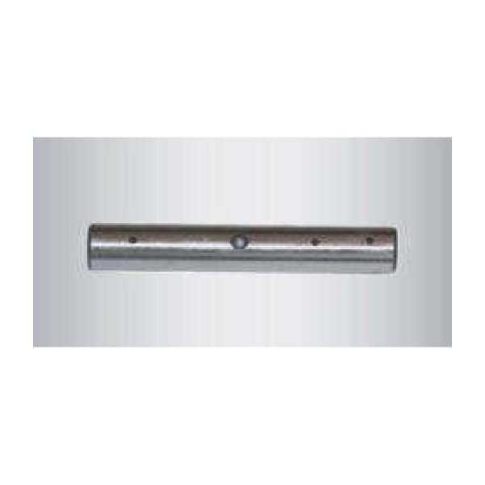

Available
Email for a quote
Mitsubishi 91F43-00400 Kingpin (MITSUBISHI/R)
| OEM part number | 91F43-00400 |
| Fits | Mitsubishi / CAT |
| Category | Steering |
| Type | Aftermarket replacement |
Send us the quantity you need and we'll reply with pricing, usually within 24 hours. Not the exact part? We can source it. Send the part number or a photo.